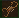
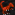

General info:
All poisonous/venomous creatures can be milked for their poison/venom.
Kobold Pets
Kobolds rely heavily on pets. None of them are grazers, so they are easy to handle.
:::  Jack Rat ::: Price: 19:::
A fast breeding rodent that gives easy access to leather, meat and bones. Never embark without.
Jack Rat ::: Price: 19:::
A fast breeding rodent that gives easy access to leather, meat and bones. Never embark without.
:::  Giant Jack Rat ::: Price: 151 :::
The big brother of the jack rat, which is used by kobolds to pull caravans.
Giant Jack Rat ::: Price: 151 :::
The big brother of the jack rat, which is used by kobolds to pull caravans.
Special: Wagon puller and pack animal.
:::  Giant Bark Scorpion ::: Price: 251 ::: Scorpions make great guard animals.
Special: Can be milked for venom.
:::  Giant Cave Spider::: Price: 501 :::
Spiders make great guard animals.
Giant Cave Spider::: Price: 501 :::
Spiders make great guard animals.
Special: Can be milked for venom and be used to farm silk.
:::  Helmet Snake ::: Price: 51 :::
Snakes make good scouts and can be butchered for their scales. They are too small to create many bones or meat, but they do give eggs.
Helmet Snake ::: Price: 51 :::
Snakes make good scouts and can be butchered for their scales. They are too small to create many bones or meat, but they do give eggs.
Special: Can be milked for venom.
:::  Shalswar ::: Price: 26 ::: A small reptilian hunter; shalswars are mini-raptors. They hunt vermin and can be farmed for scale.
Special: Vermin hunter.